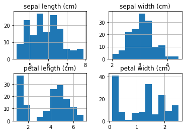

nbsphinx¶
.ipynb ファイルを sphinx のページとして扱う。最低限、マークダウンで見出しを付けること。
markdownはmystそのものではないようで sphinx の ディレクティブ埋め込みは効かないぽい。jupyter独自のmarkdown拡張があるかも。jupyter の実行結果を .doctree 化することで sphinx で扱えるようにするぽい
わりとフリーダムにいろんなものを埋め込めるようである。 きちんと .venv で管理しないと、github action のビルドに失敗しそう。 folium は requirements.txt に含まれていないのに動作しているなど。 jupyter カーネル回りはローカルの実行環境にあれば十分？
> pip install nbsphinx ipykernel
pandoc.exe に PATH を通す必要あり
conf.py
import os
if os.name == 'nt':
os.environ['PATH'] = f"{os.environ['PATH']};C:\\Program Files\\Pandoc"
実行例¶
[1]:
import pandas as pd
from sklearn import datasets
iris = datasets.load_iris()
df = pd.DataFrame(iris.data, columns=iris.feature_names)
df
[1]:
| sepal length (cm) | sepal width (cm) | petal length (cm) | petal width (cm) | |
|---|---|---|---|---|
| 0 | 5.1 | 3.5 | 1.4 | 0.2 |
| 1 | 4.9 | 3.0 | 1.4 | 0.2 |
| 2 | 4.7 | 3.2 | 1.3 | 0.2 |
| 3 | 4.6 | 3.1 | 1.5 | 0.2 |
| 4 | 5.0 | 3.6 | 1.4 | 0.2 |
| ... | ... | ... | ... | ... |
| 145 | 6.7 | 3.0 | 5.2 | 2.3 |
| 146 | 6.3 | 2.5 | 5.0 | 1.9 |
| 147 | 6.5 | 3.0 | 5.2 | 2.0 |
| 148 | 6.2 | 3.4 | 5.4 | 2.3 |
| 149 | 5.9 | 3.0 | 5.1 | 1.8 |
150 rows × 4 columns
[2]:
df.hist()
[2]:
array([[<AxesSubplot:title={'center':'sepal length (cm)'}>,
<AxesSubplot:title={'center':'sepal width (cm)'}>],
[<AxesSubplot:title={'center':'petal length (cm)'}>,
<AxesSubplot:title={'center':'petal width (cm)'}>]], dtype=object)

[3]:
import folium
m = folium.Map(
location=[45.372, -121.6972],
zoom_start=12,
tiles='Stamen Terrain'
)
folium.Marker(
location=[45.3288, -121.6625],
popup='Mt. Hood Meadows',
icon=folium.Icon(icon='cloud')
).add_to(m)
folium.Marker(
location=[45.3311, -121.7113],
popup='Timberline Lodge',
icon=folium.Icon(color='green')
).add_to(m)
folium.Marker(
location=[45.3300, -121.6823],
popup='Some Other Location',
icon=folium.Icon(color='red', icon='info-sign')
).add_to(m)
m
[3]:
Make this Notebook Trusted to load map: File -> Trust Notebook